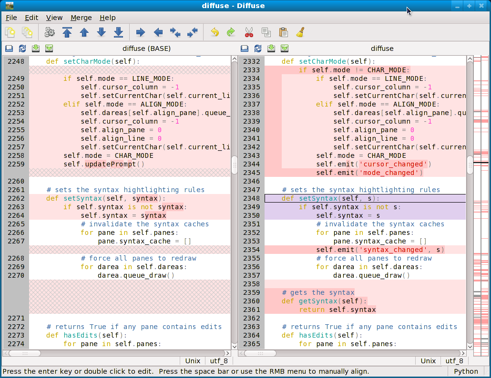
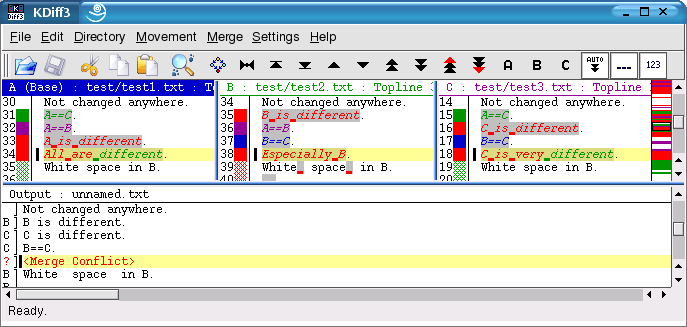
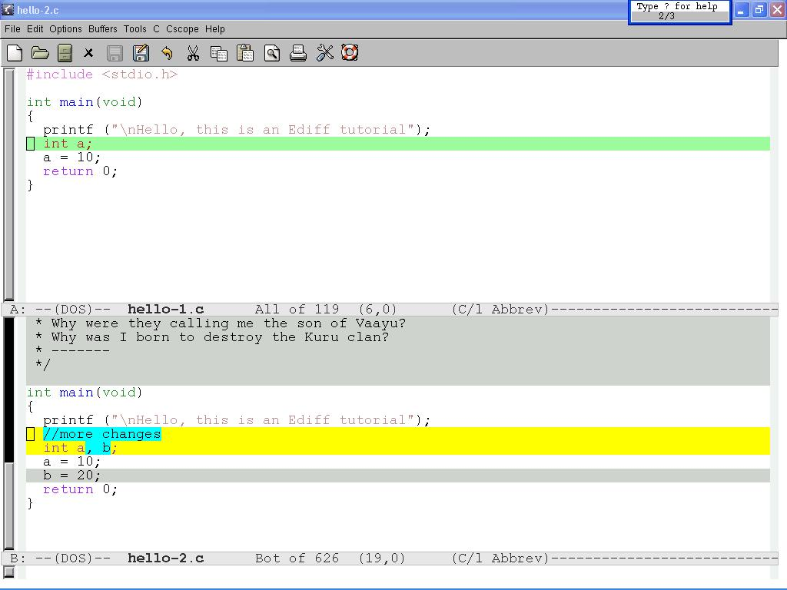

[ Prev ]
[ Index ]
[ Next ]
文件(目录)比较工具
5+ Best Free File Compare and Merge Software List
http://open-tube.com/best-free-file-comparison-tools
- WinMerge (当前仅支持Windows，作者正在开发v3版本 ，改用Qt实现，同时支持Linux)
- Meld (python, gtk)
- FreeFileSync
- Kompare
- DiffMerge
- KDiff3 (KDE or just Qt)
Diffuse - graphical tool for merging and comparing text files
http://diffuse.sourceforge.net/

新发现的的一个文件比较工具，只依赖于python和gtk，适合xfce下使用（比如colinux或者小内存机器）——tkdiff/xdiff的功能太弱了。
- 可以与版本控制工具相配合，与指定revision比较: =diffuse -r 123 foo.C= 不指定revision但只给出一个文件名时，尝试跟最后一个revision进行比较
- 在Windows上，还考虑了使用Cygwin的情况，可以调用Cygwin里面的版本控制工具 • 只能比较文件，不能比较目录;
KDiff3
没想到KDiff3还有一个Windows版本，从Debian里有个kdiff3-qt版本 来看，这个Windows版本应该是只用了Qt的

简单评估（基于Windows版本）:
- 文件夹比较是WinMerge的风格（不是Beyond Compare/Meld那种清晰的左右两栏风格），我不太习惯
- 文件内容对比时，也不能直接地将选中块复制到对面，而是要先进入merge模式，在第三个窗口中维护结果，这样每处不同都要关注三个窗口，部分完成合并后也不能简单地直接刷新视图以便直接关注剩下的部分（需要重新载入、再merge）。我还是喜欢BC/Meld的风格，甚至TC的文件比较和emacs的ediff都比这方便
- kdiff3不支持syntax highlighting，也不打算支持
- 另外有一个Windows上qt程序的共性小问题：选择语言为简体中文后，菜单字体总是比较难看的8号字，而且我在网上搜了一圈，好像Windows上没有Linux下qtconfig那样的配置工具，网上说的办法都是修改代码重新编译
Emacs ediff

misc
- [工具软件][totalcmd] 将TortoiseSVN里面的TortoiseMerge用作totalcmd的文件比较工具似乎是个不错的主意: wincmd.ini CompareTool=”c:\path\to\tortoisemerge.exe” 加载还比较快，而且是免费的(BeyondC..虽然好但不免费) [2011-06-07 17:59:38]
- 将代码文件与其svn base进行比较: C:\Program Files\TortoiseSVN\bin\TortoiseProc.exe /command:diff /path:%P%N 在TC里配个快捷键，比每次点好几级菜单方便多了 [2011-11-14 17:42:55]
- 这个文件比较工具只依赖于python和gtk，可能更适合xfce里使用(meld依赖gnome, kdiff依赖kde, tkdiff和xdiff又太弱了) Diffuse - graphical tool for merging and comparing text files http://diffuse.sourceforge.net/ [2012-05-16 08:42:49]
- 没想到kdiff3还有windows版（从debian网站的信息来看，应该是采用qt的简版 http://packages.debian.org/squeeze/kdiff3-qt )。试用了一下，文件夹比较是WinMerge的风格（不是Beyond Compare/Meld那种清晰的左右两栏风格）... [2012-06-18 10:20:22]
- 续: 文件内容对比时，也不能直接地将选中块复制到对面，而是要先进入merge模式，在第三个窗口中维护结果，这样每处不同都要关注三个窗口，部分完成合并后也不能简单地直接刷新视图以便直接关注剩下的部分（需要重新载入、再merge）。我还是喜欢BC/Meld的风格，甚至TC的文件比较和emacs的ediff都比这方便 [2012-06-18 10:26:22]
- 续kdiff3: 另外，UI设计不怎么样，只有工具条和繁琐的主菜单可以使用，没有右键菜单，没有meld中栏那种"直接复制到对端"的箭头 http://kdiff3.sourceforge.net/doc/screenshots.html 倒是跟我用其它KDE程序的感受一致：功能似乎很多，但很繁琐，用着累 [2012-06-18 10:31:53]
- 续: kdiff3不支持syntax highlighting，也不打算支持 http://kdiff3.sourceforge.net/doc/faq.html#id2569879 而BC/Meld/WinMerge都是支持的 [2012-06-18 10:37:29]
- [RIL] Subversion, KDiff3, and Cygwin http://goodliffe.blogspot.com/2009/04/subversion-kdiff3-and-cygwin.html [2012-06-18 15:51:49]
No backlinks to this page.
Attachments:
{kind=link}
{kind=link}